Found Letters
PROCESS
I started this project by collecting a set of interesting letters from the environment. I found 10 examples of each letter from a variety of sources including book covers, posters, and signs in public. After collecting each letter, I used illustrator to trace each sample into a digital form.
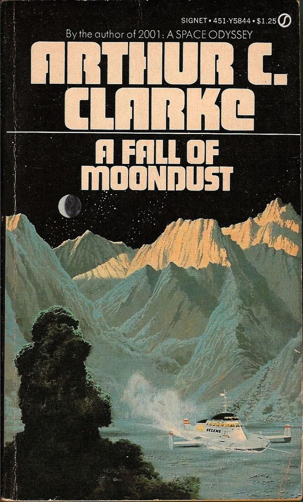 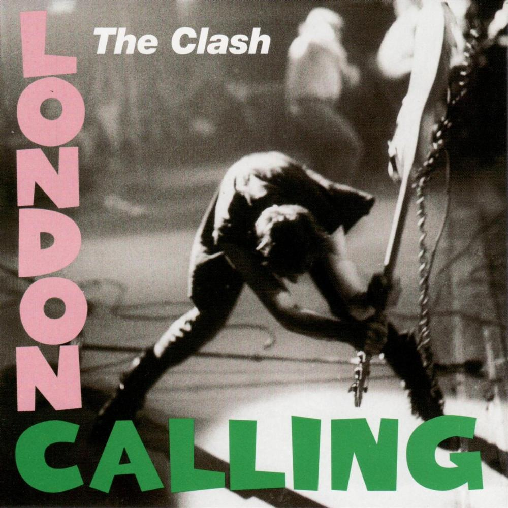 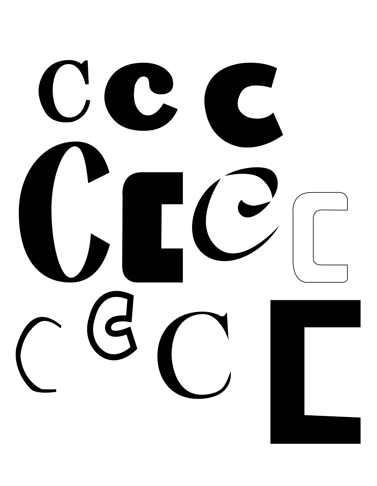LETTER BOOK
The next part of the project was to use the letter forms to create a letter book. Each page is an abstract composition made of the letters I found which I then complied into a finished book.
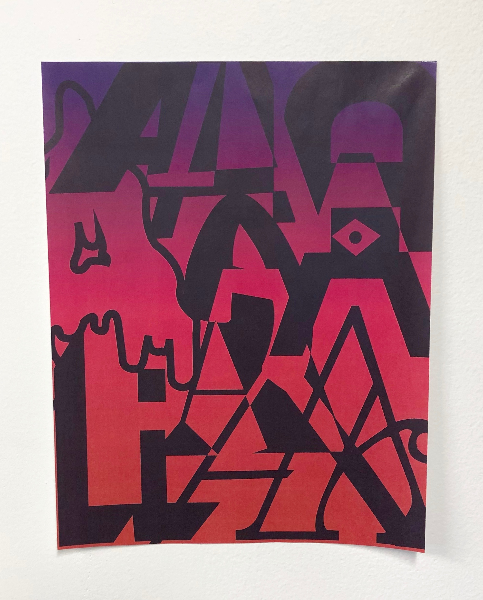 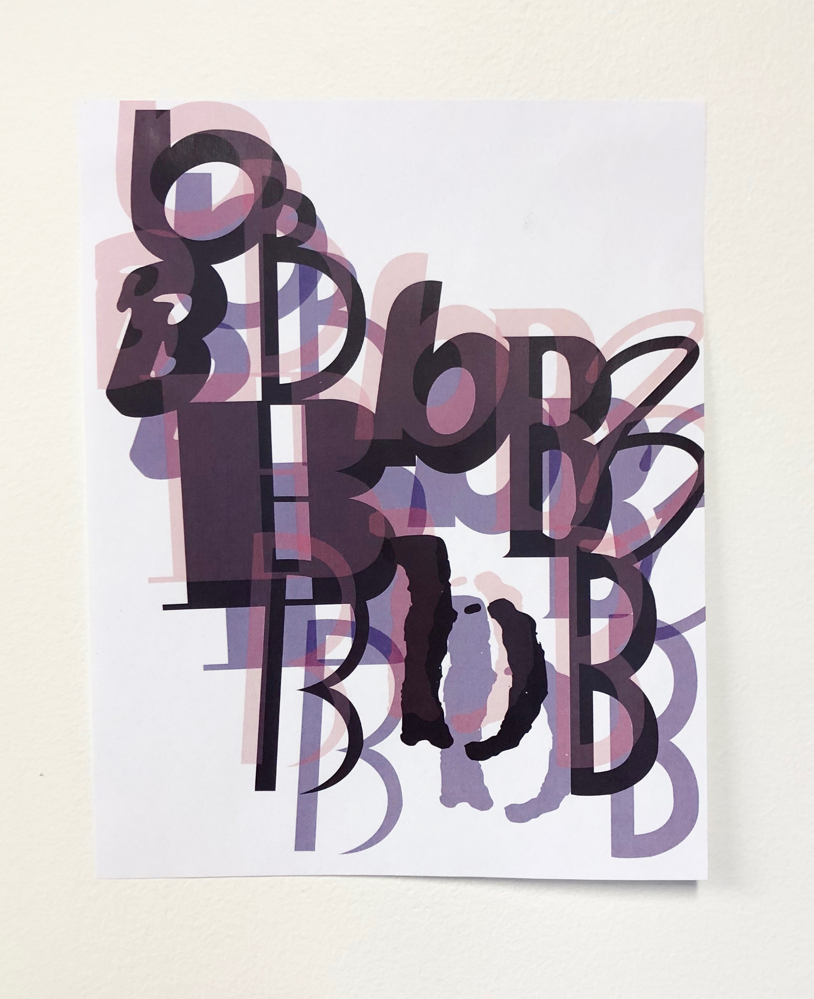 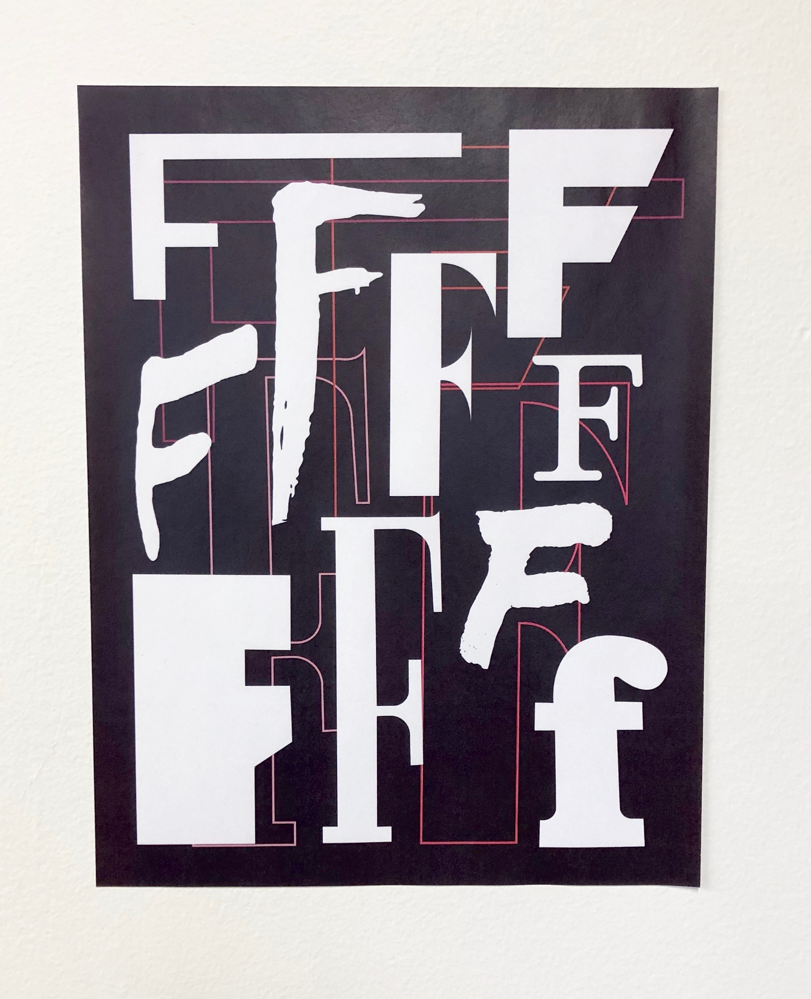 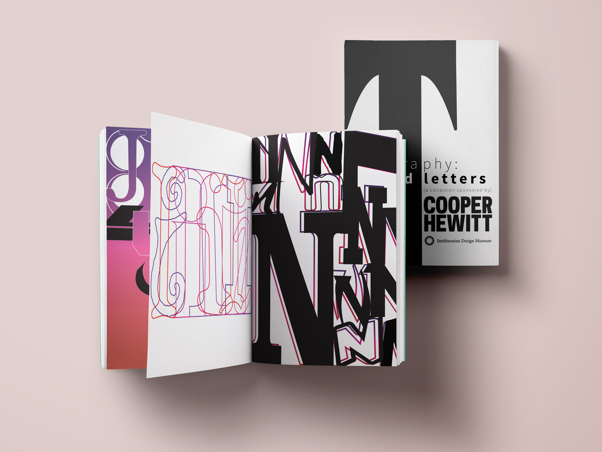ADVERTISING CAMPAIGN: PRINT
In order to develop my project more for my own career goals, I created an advertising campaign for a hypothetical “Found Letters” exhibit being held at the Cooper Hewitt design museum in New York City. I used the letter compositions to create print posters that would be found around the city, on bus stops, and in the subway.
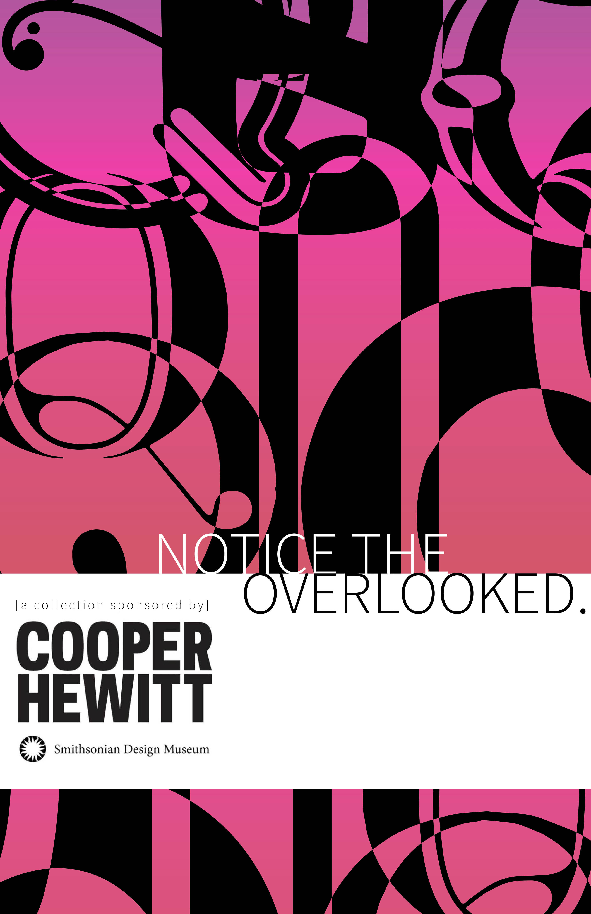 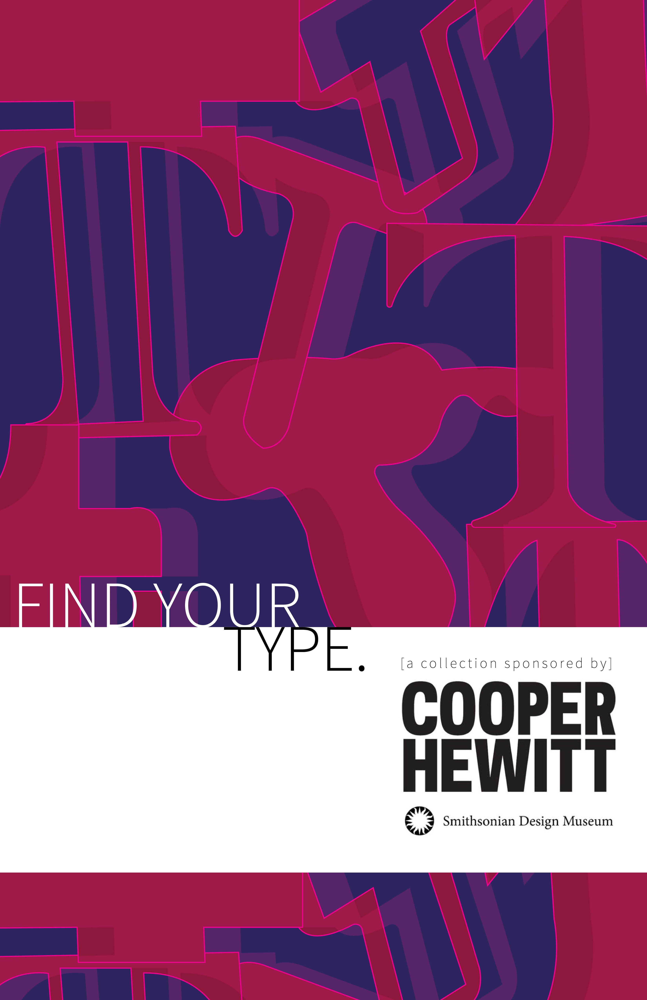 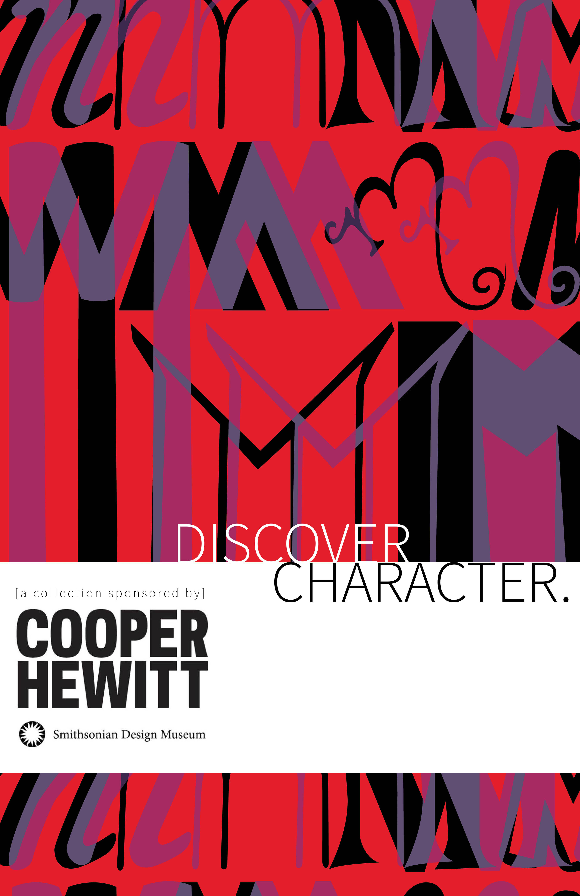 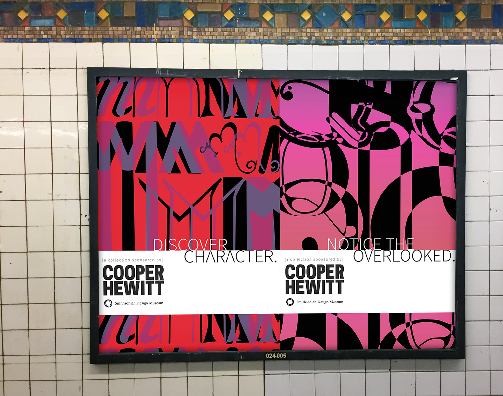